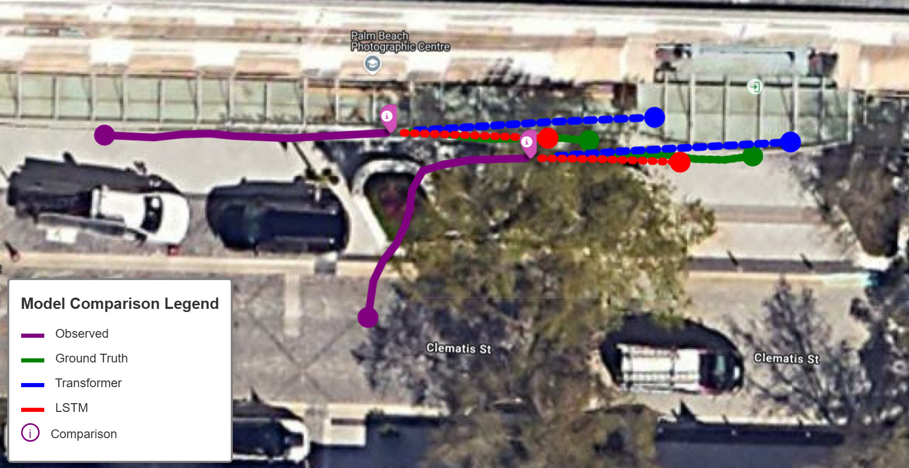
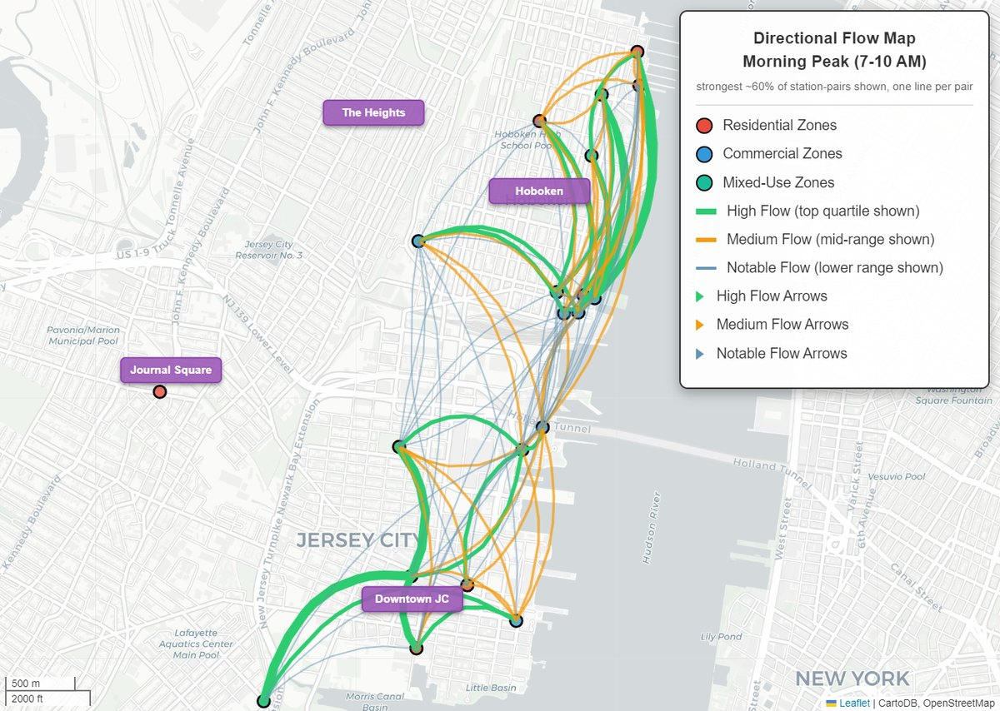

Ph.D. in Transportation and Environmental Engineering
2024 – Present
Florida Atlantic University · GPA 4.0/4.0 · Advisor: Dr. Jinwoo Jang
I am a PhD candidate and Graduate Research Assistant at Florida Atlantic University, working in the I-SENSE Lab with Dr. Jinwoo Jang. I expect to complete the PhD in 2028–2029.
My research applies deep learning to intelligent transportation systems: Transformer-based multi-agent trajectory prediction from real-world LiDAR data, spatial graph neural networks for mobility flow, and urban digital twins for city-scale wind simulation. Funded by the NSF and the NIH.

Where is that pedestrian about to step? A Transformer answers it from raw LiDAR.
Road users react to each other. Most models still predict each one alone.

Cyclist risk concentrates where riding concentrates — but the numbers usually arrive after the crash.
Wind studies model cities as flat blocks, because that geometry is easy to get. Does the shortcut change where the dangerous air goes?
Full CV — teaching, talks, funding, mentoring, awards and technical skills →